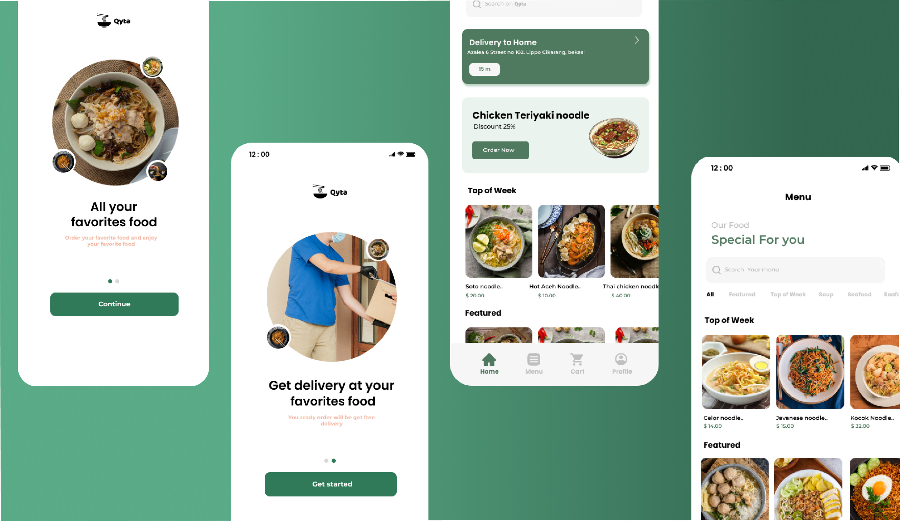

An end-to-end mobile product design case study crafted in Figma—transforming the multi-step food ordering journey into an intuitive, warm, and delightful digital experience.
Role
UI/UX & Product Designer
Platform
Mobile (iOS / Android)
Tools
Figma, Design System, Prototyping

Qyta is an original mobile product design conceptualized from scratch in Figma as a school capstone—built to demonstrate how strong visual hierarchy and empathetic layout reduce decision fatigue during food discovery.
Food delivery apps must present dense information—menus, dietary tags, ratings, delivery ETAs, promotions—on compact screens. The design challenge was organizing this density without creating cognitive overload for hungry users.
I designed a cohesive multi-screen system with consistent component states, prominent primary actions, sticky order summary trays, and live prototype micro-interactions that make ordering feel natural and transparent.
Complete screen coverage from onboarding, restaurant browsing, custom item options, to order review.
Category tabs, top-of-week highlights, and transparent pricing cards optimized for rapid scanning.
Real-time subtotal calculations, fee disclosures, and distinct primary CTA buttons.
Smart animate transitions, modal popovers, and interactive states modeled directly in Figma.
Click inside the frame to navigate through the interactive mobile prototype Figma Live
Designing Qyta reinforced that UI/UX is fundamentally about problem solving rather than visual embellishment. Modeling every screen from the perspective of a user ordering lunch on a busy workday forced me to be ruthless about clarity, touch target sizing, and feedback visibility. Learning Figma's advanced component systems and smart animation flows proved invaluable for bridging the gap between design theory and production implementation.